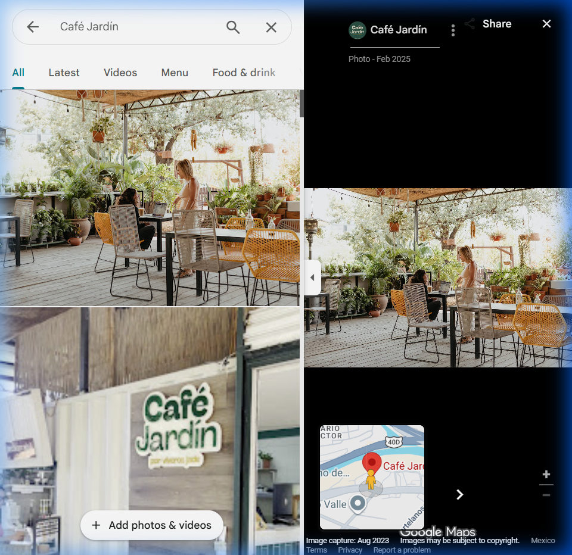
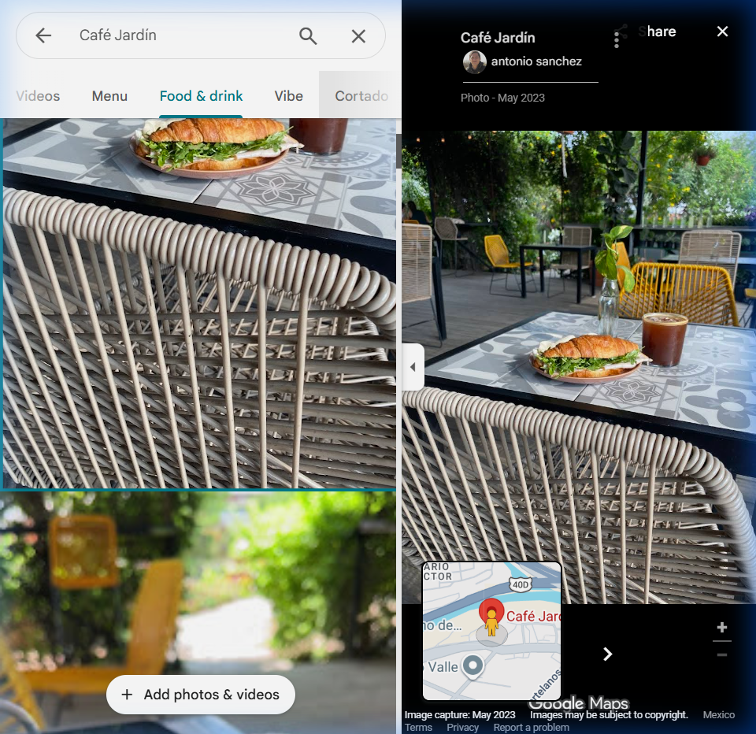
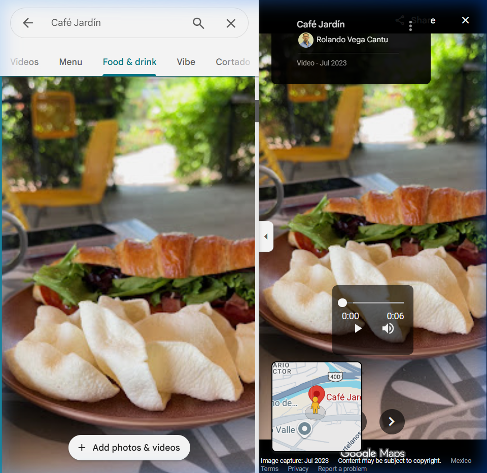
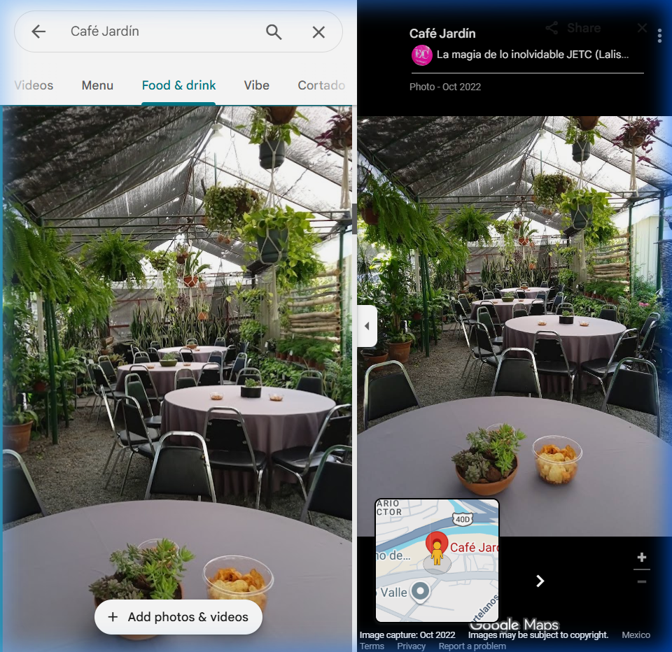

Café Jardín por Viveros Jade te ofrece una experiencia gastronómica única rodeada de plantas, árboles y un ambiente que conecta con la naturaleza.

Disfruta de nuestro menú artesanal en un espacio único rodeado de plantas y vegetación natural.

Croissants artesanales, sándwiches gourmet y café de especialidad. El desayuno perfecto en un entorno natural.
Visítanos →
Menú variado con opciones frescas y caseras. Ensaladas, platillos del día y opciones para todos los gustos.
Visítanos →
Espacio ideal para eventos privados, reuniones y celebraciones especiales rodeados de vegetación y naturaleza.
Cotizar evento →Experiencias reales de quienes han disfrutado Café Jardín.
"El lugar es hermoso, rodeado de plantas y con un ambiente muy relajante. La comida deliciosa, el croissant de jamón y queso espectacular."
"Un oasis en medio de la ciudad. Perfecto para desayunar tranquilamente o tomar un café con amigos. El ambiente entre plantas es increíble."
"Excelente para eventos. Hicimos una reunión familiar y todo salió perfecto. El espacio es amplio, bonito y la atención muy amable."
Estamos dentro de Viveros Jade. ¡Te esperamos para vivir la experiencia!
Carr. Nacional 40D, Valle de Chipinque, 66297 San Pedro Garza García, N.L. (dentro de Viveros Jade)
Reserva tu mesa por WhatsApp o llámanos directamente.
Martes a Domingo · 9:00 a.m. — 6:00 p.m.
Lunes cerrado